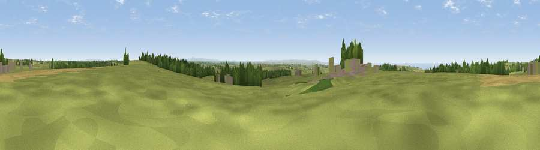

Viewpoint near Eastcott
#13545 in England · top 33% of its area beats it · near Eastcott · path 159 mWhere it is
The exact computed spot (SS 25725 15525). Click the marker for map links.
Public access: the nearest public right of way is about 159 m away — the final stretch may cross private land. Computed from Natural England's CRoW access layer and OpenStreetMap rights of way — not the legal definitive map. Always verify locally.
The view, rendered

A 360° render of this exact spot computed from the terrain model, tree cover and land cover — summer colours, afternoon light, calibrated against photographs of famous viewpoints. Real trees, hedges and buildings will differ in detail.
The panorama
Grey silhouette: terrain skyline in each direction (720 bearings, Earth curvature and refraction included). Dashed green: skyline with trees (+15 m) and buildings (+8 m) as obstacles. Blue strip: how far the ground is visible on each bearing.
Where the view opens
Wedge length = distance to the farthest visible ground on that bearing (vegetation-aware). Rings at 10, 25 and 50 km.
What fills the view
72% grassland · 11% woodland · 9% water · 6% cropland · 2% built-up
Angular shares of the visible panorama (visual magnitude), not map area. Landscape diversity 0.40 (0–1 Shannon).
Key numbers
More beautiful places nearby
The staircase of upgrades: each row has a higher view potential than everything closer. Driving times are estimates from straight-line distance, calibrated against real road routing — check an actual route before setting out.
| Place | Direction | Drive | Score |
|---|---|---|---|
| Viewpoint near Eastcott | N · 3 km | ~7 min | 64.7 |
| Bursdon Moor | NNE · 4 km | ~10 min | 68.0 |
| Viewpoint near Welcombe | NW · 5 km | ~12 min | 76.3 |
| Embury Beacon | NW · 6 km | ~12 min | 83.8 |
| Viewpoint near Bucks Mills | NE · 14 km | ~26 min | 84.0 |
| Viewpoint near Crackington Haven | SSW · 25 km | ~40 min | 88.1 |
| Viewpoint near Combe Martin | NE · 47 km | ~67 min | 88.9 |
| Holdstone Hill | NE · 48 km | ~69 min | 90.2 |
50.91281, -4.48044 · source: screening · position refined by local search. Computed location — check access rights before visiting.